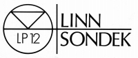
LINN（リン）
ロングセラーのアナログプレイヤーLP-12シリーズや、近年では熱とワークプレイヤーで知られる、イギリスのメーカー。当社はLP-12シリーズでスタートしたが、やがてスピーカー、アンプと業容を拡大し、1990年代にはCDプレイヤーにも進出し、名声を得ていた。また製品のライフサイクルを長く取っていることでも定評があったが(*)、近年ではそちらはやや怪しさを増している。
代理店は長らくオーデックス・ジャパンが務めていたが、1990年代前半にリン・ジャパンとなった。
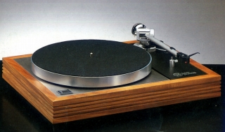
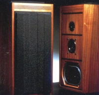
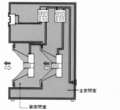
(ISOBARIK DMSとアイソバリック理論構造図）
*ライフサイクルについて
オーデックス・ジャパン時代だが、1980年代までは製品のライフは最低25年としていたが、1990年代になると最低15年と縮められた。その後のリン・ジャパン時代になってどうなったことやら・・・
�T.カートリッジ
初期のMC型は日本のスペックスからのOEM調達であることは広く知られている。しかしデザイン・ボディ構造などかなりこったものであった。MM型についてはテクニカの海外向けモデルと針互換性があるという情報もあるが、詳細は不明。
1.MC型
最初のモデル、Asakはスペックスの朝倉氏から名前を取ったとされている。スペックスによるOEMはその後も続いたが、スペックス消滅後の調達先は不明。
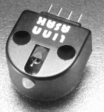
(Asak)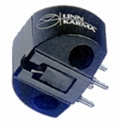
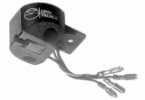
(左 Karma 右 Troika)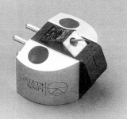
(Kiyde)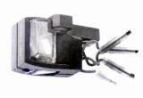
2.MM型
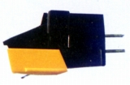
(Basik)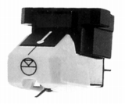
(K9)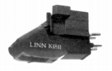
(K18�U)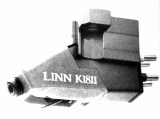
(Hybrid K18�U)
�U.ヘッドアンプ・フォノイコライザーアンプ
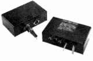
(Pre Preamp)(ヘッドアンプ) Pre Preamp
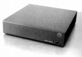
(Linto)(フォノイコライザーアンプ) Linto
�V.アーム
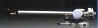
(Ittok LV-�U)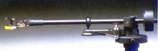
(Basik LV-X）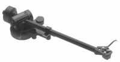
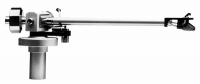
(Ittok LV-�V)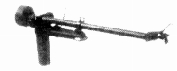
(Akito/�U)
�W.その他
国内に入ってきた範囲では、いわゆるアクセサリーの資料はほとんどない。アームは基本的にシェル固定型であるし、またアーム自体もあまり汎用性のあるタイプではない。
唯一あったのが「LINN
PACK206」と呼ばれたリード線とビス・ナットのキットである。
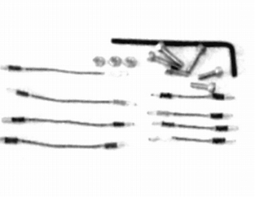
(PACK206 \5,900)